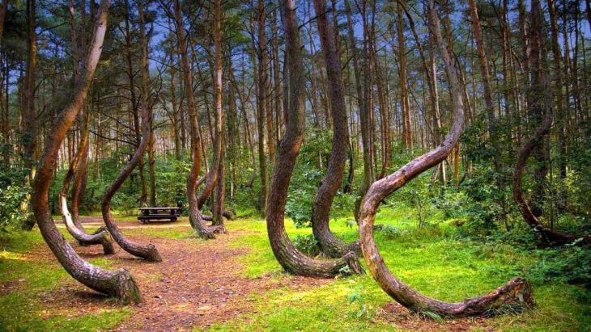

Florestas
Florestas pelo mundo
Cloud Forest

Reunindo 2,5% da biodiversidade mundial, essa floresta e reserva biológica de mais de 10 mil hectares na Costa Rica ganha o nome da cidade vizinha, Monteverde. Reúne mais de 100 espécies de mamíferos, 400 espécies de aves, 120 espécies de répteis e anfíbios e 2.500 espécies de plantas.
Daintree Rainforest

Na costa nordeste de Queensland, a floresta de Daintree é talvez uma das mais antigas florestas tropicais do planeta e a maior da Austrália, com cerca de 1.200 km2. A biodiversidade reúne cangurus e ornitorrincos além de cerca de 430 espécies de pássaros.
Crooked Forest
Uma misteriosa floresta na região oeste da Polônia abriga cerca de 400 pinheiros com a base do tronco inclinada em 90 graus. Acredita-se que o formato das árvores, supostamente plantadas nos anos 1930, é devido a intervenção humana.